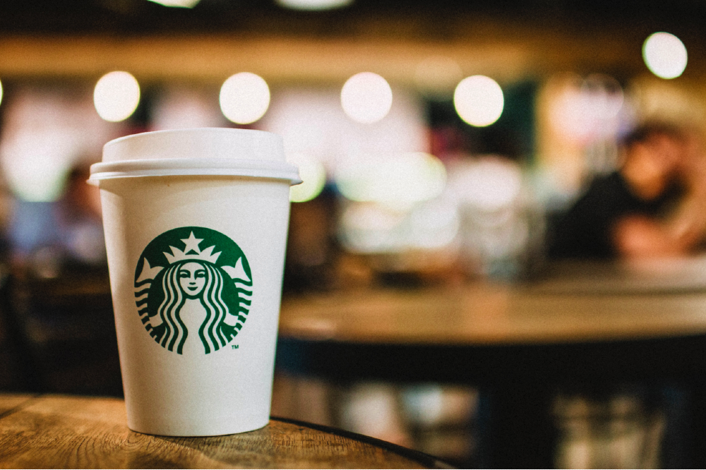

ㅤㅤㅤㅤㅤㅤㅤㅤㅤ☕𝗡𝗩𝗭-𝗖𝗢𝗙𝗙𝗘𝗘 ☕ㅤㅤㅤㅤㅤㅤㅤㅤ
𝗧𝗶𝗽𝗼𝘀 𝗱𝗲 𝗖𝗮𝗳𝗲́
𝐂𝐚𝐟𝐞́ 𝐄𝐬𝐩𝐫𝐞𝐬𝐬𝐨:
Espresso é uma forma concentrada de café, feito com uma máquina de espresso. É conhecido por seu sabor forte e encorpado, além de uma camada de creme na parte superior.

𝐂𝐚𝐟𝐞́ 𝐀𝐦𝐞𝐫𝐢𝐜𝐚𝐧𝐨:
O café americano é uma versão diluída do espresso. É preparado adicionando água quente ao espresso, resultando em uma bebida de sabor mais suave e menos concentrada.

𝐂𝐚𝐟𝐞́ 𝐋𝐚𝐭𝐭𝐞:
café latte é uma combinação de espresso e leite vaporizado, coberto com uma pequena quantidade de espuma de leite. É uma opção cremosa e suave, popular em cafeterias.